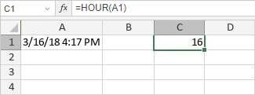

HOUR Funkcija
Funkcija HOUR je jedna od funkcija za datum i vreme. Vraća sat (broj od 0 do 23) iz zadate vremenske vrednosti.
Sinaksa
HOUR(broj_serijala)
Funkcija HOUR ima sledeći argument:
| Argument | Opis |
|---|---|
| broj_serijala | Vremenska vrednost iz koje želite da izdvojite sat. |
Napomene
Argument broj_serijala može biti izražen kao tekstualna vrednost (npr. "13:39"), decimalni broj (npr. 0.56 odgovara 13:26) ili kao rezultat formule (npr. rezultat funkcije NOW u podrazumevanom formatu - 26.9.2012 13:39).
Kako primeniti funkciju HOUR.
Primeri
Slika ispod prikazuje rezultat koji vraća funkcija HOUR.
